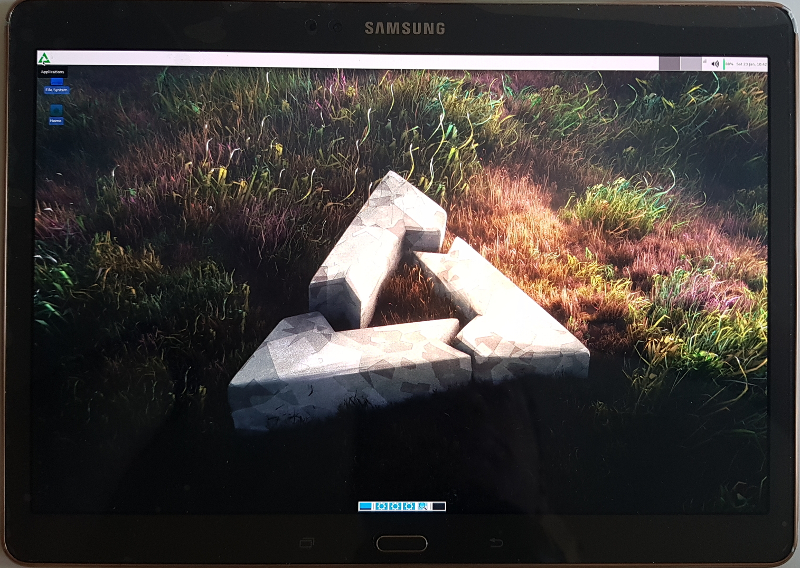

Samsung Galaxy Tab S 10.5 WiFi (samsung-chagallwifi)
|

Chagallwifi with the xfce GUI |
|
| Manufacturer | Samsung |
|---|---|
| Name | Galaxy Tab S 10.5 (WiFi) |
| Codename | samsung-chagallwifi |
| Released | 2014 |
| Category | testing |
| Original software | Android 4.4.2 |
| Hardware | |
| Chipset | Samsung Exynos 5420 |
| CPU | 1.9 Ghz A15 Quad + 1.3 Ghz A7 Quad |
| GPU | Mali-T628 MP6 |
| Display | 2560x1600 AMOLED |
| Storage | 16/32 GB |
| Memory | 3 GB |
| Architecture | armv7 |
{kind=link}
| USB Networking |
Works
|
|---|---|
| Flashing |
Broken
|
| Touchscreen |
Partial
|
| Display |
Works
|
| WiFi |
Works
|
| FDE |
Broken
|
| Mainline |
Partial
|
| Battery |
Broken
|
| 3D Acceleration |
Broken
|
| Audio |
Broken
|
| Bluetooth |
Broken
|
| Camera |
Broken
|
| GPS |
Broken
|
| Mobile data |
|
| SMS |
|
| Calls |
|
| USB OTG |
|
| NFC |
|
| Accelerometer |
Broken
|
|---|---|
| Magnetometer |
|
| Ambient Light |
|
| Proximity |
|
| Hall Effect |
|
| Barometer |
|
| Power Sensor |
|
| Keyboard |
|
|---|---|
| Touchpad |
|
| USB-A |
|
| HDMI/DP |
|
| Ir TX |
|
| TrustZone |
|
| FOSS bootloader |
|
Contributors
Users owning this device
How to enter flash mode
Press and hold Power + Volume Down + Home . Press Volume Up when prompted
Installation
To install postmarketOS to an sdcard, insert the sdcard to your computer, check the /dev mountpoint with for example fdisk, and run
$ pmbootstrap install --sdcard /dev/sdX
where sdX should be replaced by the mountpoint. After that flash the kernel with
$ pmbootstrap flasher flash_kernel
and the tablet should automatically reboot into postmarketOS.
To install postmarketOS to the internal storage the easiest way is to create a zip to flash from twrp, run
$ pmbootstrap install --android-recovery-zip
$ pmbootstrap export
And then copy or
adb push
/tmp/postmarketOS-export/pmos-samsung-chagallwifi.zip to your device, reboot to twrp and install the zip and then reboot to system.
Alternatively you can flash the kernel with heimdall from download mode and then install the rootfs with netcat by running:
$ pmbootstrap install
$ pmbootstrap initfs hook_add debug-shell
$ pmbootstrap export --odin
$ heimdall flash --BOOT /tmp/postmarketOS-export/boot.img-samsung-chagallwifi
You can now telnet to the device and netcat the postmarketOS installation:
$ telnet 172.16.42.1
$ nc -v -l -p 60000 > /dev/mmcblk0p18
Open another console
$ pv /tmp/postmarketOS-export/samsung-chagallwifi.img | nc 172.16.42.1 60000
Wifi in downstream kernel
To connect to a wifi the same steps as for the Medion Lifetab S9714 (medion-kai) work:
1. Verify that the wlan0 interface exists
$ ip link
2. Turn on wifi
$ nmcli radio wifi on
3. List available wifis
$ nmcli device wifi list
4. Connect to your wifi
$ nmcli device wifi connect "$SSID" password "$PASSWORD"
5. Verify that you have been given an ip address on the wlan0, or swlan0, interface
$ ip a
Issues in downstream (apart from broken components)
Touchscreen does not work fully after a while (after device sleeps?). Cursor still moves, but it is impossible to click, or double click, things. This has been observed in xfce, happens on klimtlte as well.
Mainline kernel status
A work in progress mainline kernel (linux-postmarketos-exynos5) is available (can be chosen in pmbootstrap init step). You can install postmarketOS to either the internal or external storage and ssh into the tablet over USB. Display, wifi and everything else are not working.
Command Line and serial output
/proc/cmdline
when running LineageOS 15.1 contains:
console=ram loglevel=4 sec_debug.level=0 sec_watchdog.sec_pet=5 androidboot.debug_level=0x4f4c sec_log=0x200000@0x26000000 sec_tima_log=0x200000@0x26202000 sec_avc_log=0x40000@0x26404000 s3cfb.bootloaderfb=0x67000000 lcdtype=5410823 consoleblank=0 lpj=3977216 vmalloc=512m sec_debug.reset_reason=7 oops=panic pmic_info=67 cordon=e2693b1e8c8724879b6f74b29a0120f3 connie=SM-T800_OPEN_EUR_c7e33ee79c0aa018334d7f72d27d952a androidboot.emmc_checksum=3 androidboot.boot_salescode= androidboot.odin_download=1 androidboot.bootloader=T800XXU1BOJ1 androidboot.selinux=enforcing androidboot.hardware=universal5420 androidboot.warranty_bit=1 androidboot.sec_atd.tty=/dev/ttySAC2 androidboot.serialno=[removed] snd_soc_core.pmdown_time=1000
Simply attaching a
serial debugging cable
(use a 619 kOhm resistor) gives output from the bootloader, but not from the kernel. The reason for this is that
console=ram
is passed on the cmdline from the bootloader. We need to override this to specify
console=ttySAC2,115200n8
. This is already part of the
default cmdline in the kernel config
, but this is then ignored due to CONFIG_CMDLINE_FROM_BOOTLOADER=y being set. To instead concatenate the cmdline from the config to the bootloader cmdline, unset CONFIG_CMDLINE_FROM_BOOTLOADER and set CONFIG_CMDLINE_EXTEND=y, i.e. apply:
diff --git a/device/testing/linux-samsung-chagallwifi/config-samsung-chagallwifi.armv7 b/device/testing/linux-samsung-chagallwifi/config-samsung-chagallwifi.armv7
index f45c768c..e6303374 100644
--- a/device/testing/linux-samsung-chagallwifi/config-samsung-chagallwifi.armv7
+++ b/device/testing/linux-samsung-chagallwifi/config-samsung-chagallwifi.armv7
@@ -698,9 +698,9 @@ CONFIG_ALIGNMENT_TRAP=y
# CONFIG_USE_OF is not set
CONFIG_ZBOOT_ROM_TEXT=0
CONFIG_ZBOOT_ROM_BSS=0
CONFIG_CMDLINE="console=ttySAC2,115200n8 vmalloc=512M androidboot.console=ttySAC2"
-CONFIG_CMDLINE_FROM_BOOTLOADER=y
-# CONFIG_CMDLINE_EXTEND is not set
+# CONFIG_CMDLINE_FROM_BOOTLOADER is not set
+CONFIG_CMDLINE_EXTEND=y
# CONFIG_CMDLINE_FORCE is not set
# CONFIG_XIP_KERNEL is not set
# CONFIG_KEXEC is not set
If there is no traffic when booting after you plug in the cable you might also need to restart/reset the device (hold vol down + home + power) to get it going.
See also
- pmaports!1174 Initial merge request
- pmaports!2860 Initial mainline kernel merge request